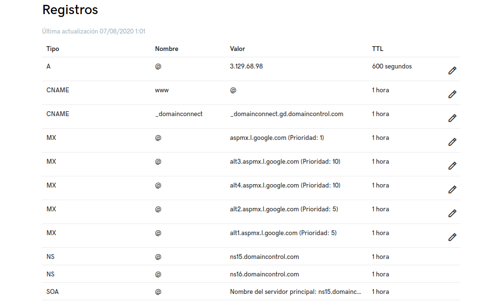

Odoo AWS
2020-08-07
Capítulo 1 Prerrequisitos
1.1 Amazon Web Service
https://www.youtube.com/watch?v=VdXQTcetr6o
1.1.1 Crear y activar una cuenta AWS
https://aws.amazon.com/es/premiumsupport/knowledge-center/create-and-activate-aws-account/
1.1.2 Lanzar servidor AWS EC2 con Ubuntu 16.04
https://mobisoftinfotech.com/resources/mguide/launch-aws-ec2-server-set-ubuntu-16-04/

1.1.3 Conexión a la instancia
Información de la instancia
Conexión a la instancia de Linux mediante un cliente SSH
Ejemplo
1.2 Dominio
https://www.palbin.com/knowledge-base/como-configurar-mi-dominio-en-godaddy/
https://co.godaddy.com/help/configuracion-de-dns-para-tu-dominio-de-cpanel-8852

Figure 1.2: Registros DNS